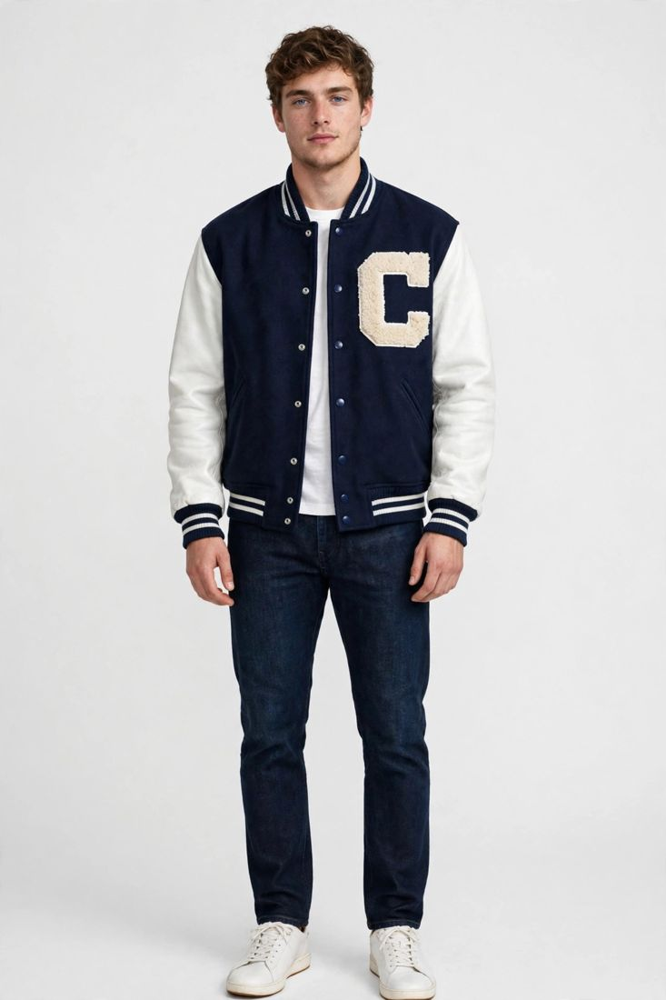

Most streetwear orders do not fail at the factory. They fail in the two weeks before the factory ever sees them: the messages, the missing measurements, the fabric nobody asked about. When a brand writes to a custom streetwear manufacturer for the first time, the message usually carries three things: a photo, a quantity and a date. Two of the three are usually wrong. This guide follows an order the way it actually happens, from the first message to the boxes leaving, so your first run arrives the way your customer expects it to.

A streetwear range is not five products. It is one product your customer already wants, plus the pieces that sit next to it. Hoodies, tees, cargo pants, sweatshirts, a varsity jacket: each one is a different fabric, a different fit and a different set of things that can go wrong, and ordering all five at once multiplies the risk by five, not by one. Pick the piece your customer already buys from you, and make that the first order. A hoodie-first brand that adds a tee in the second order learns more than a brand that launches five styles and cannot tell which one failed. Decide the sizes your customers actually buy before you write, not after the quote arrives. A size run that includes sizes nobody orders is stock you will sit on.
Send your design or tech file, with measurements, fabric and colours. No tech file? A clear photo, your artwork file and a reference piece you already own are enough to begin. Once we have seen the design, we quote that exact piece, not a guess made without it. The first message is not a greeting. It is the document the quote is built on. The photo tells us the style, the measurements tell us the fit, the fabric weight tells us the cost. Without those three, any number we give you is a guess, and a guess is what turns into a surprise later. Send, with the design:
A quote has three numbers in it, and buyers usually read only one: the price per piece. The other two decide whether the order works. The first is the minimum per style. A first streetwear run can be as small as 15 pieces of one style, sizes mixed inside the run, so a new label can test a hoodie or a tee without buying stock nobody wants. The second is sampling, the third is the time the bulk run takes once the sample is approved. Most buyers compare the per-piece price across factories and pick the cheapest, then discover the minimum was 300 pieces, or the sample takes a month. Ask what the quote covers, fabric, print, labels, packing, before you approve anything. A quote that lists each of those separately is a quote you can trust; one that hides them in a single number is a quote you will argue about later.
Streetwear is the one division where the fabric weight decides the product. A hoodie at 280 GSM and a hoodie at 450 GSM are not the same garment at a different price; they hang differently, wash differently and sell to different customers. In our experience, most buyers get this wrong: they choose on a photo, then wonder why the hoodie they received feels thin. A heavyweight hoodie, 400 GSM and up, holds its shape and feels substantial; a midweight fleece is softer and cheaper but will not read as premium. Tees are the same story at a lower number: a heavyweight tee around 240 GSM drapes like a proper garment, while a light one goes sheer at the shoulders and loses its shape after a few washes. Ask for the weight in writing, in GSM, before the sample is cut. A factory that cannot tell you the GSM of the fabric it is using is a factory you should be careful with.
A streetwear label in the US came to us with exact numbers: a heavyweight hoodie at 400 GSM and above, a heavyweight tee at 240 GSM, and cargo pants, 50 to 100 pieces per style. Because the weights were written down before anything was quoted, the quote was exact, the samples matched the first message, and nothing had to be remade. The lesson is not that every buyer needs to know GSM by heart, only that one number, agreed in writing before sampling, removes the argument that usually happens after the goods arrive.
The sample takes 7–10 working days from the day we have your design and the details agreed. That week is the cheapest week of the whole order: a change at the sample stage costs a day, the same change after cutting costs the run. When the sample arrives, wear it the way your customer will. Wash it once before you approve it, because a print that cracks and a fleece that shrinks will not show themselves dry on a hanger. Check the ribbing at the cuffs and the hem: pull it and let go, and it should come all the way back. Check the drawstring, the pocket bags and the inside of the neck.
I check the sample after a wash, because that is when a streetwear garment tells the truth. Dry on the table, everything looks right: the cuffs bounce back, the print is sharp, the fleece is soft. Then it goes through one wash and the drawstring shrinks, or the print at the elbow shows a hairline crack, or the hem ribbing stays stretched. I learned that on a run of hoodies a few years back: the sample passed every check I did dry, and the first customer wash told a different story. Now the wash comes first, before I sign anything off, and it takes ten minutes. It is the cheapest ten minutes in the whole order.
A print is not a picture on a garment. It is a layer sitting on fabric that moves, folds and gets washed, and the method you choose decides how long it lasts. Screen print is the workhorse: it holds up well on cotton fleece and tees, and suits bold, flat artwork. Puff print gives the raised texture streetwear customers love, but it has to be cured properly or it flattens in the wash. Embroidery lasts longest of all and suits chest logos and small details, but dense embroidery on a light tee will pucker the fabric, so keep it small or put it on the heavier pieces. Whatever method you choose, ask for one washed sample of the print itself, not just a photo of it. A print that survives the first wash will usually survive the season.
Streetwear fit is a decision, not a default. An oversized hoodie and a regular hoodie are two different patterns, and a factory that grades one into the other will give you a garment that is long in the body and tight in the shoulders. Decide the fit before sampling, oversized, boxy, regular or slim, in real measurements, not retail sizes. A size M from one label is not a size M from another. Grade the sizes properly: chest, body length, sleeve length and shoulder, each one separately, because a hoodie graded only on the chest will pull at the shoulders on a taller customer. Try the sample on real people, in the sizes your customers actually buy, and write those measurements into the order itself, so the next run is cut from the same numbers.
Nothing in the run should carry our name unless you ask for it. The labels, the size tags and the packaging are yours: send the artwork with the design and the sample will come back with your brand on it, the way your customer will see it. If you want the country tag to read "Made in [your country]", say so and it will; otherwise it reads "Made in Pakistan". Packing is the same conversation: folded or on hangers, polybagged individually or in bulk, and the size breakdown printed on the carton so your warehouse can find the right box without opening all of them. Small decisions, and they decide whether the delivery can be sold from or has to be repacked.
Before the cartons are sealed, the run gets checked twice over: once while it is still being made, and once when it is finished and packed. Measurements against the approved chart, stitching, the print after a wash, the labels and the count. On a small run we can pull one finished piece out and send it to you while the rest keeps moving, so anything wrong gets caught in time to fix it. Ask for photos of the finished pieces before packing, and check the carton markings against the order. If the order is large enough to justify it, a third-party pre-shipment inspection puts an independent report behind the shipment, see our inspection services.
Start from the date the goods have to be in your customers' hands, and count backwards. Sampling takes 7–10 working days once the design and details are agreed. The bulk run depends on quantity, finishes and how many rounds the sample needed. Then shipping to North America or Europe, by air or by sea, plus customs. Share the real date at the start and the run can be planned around it; mention it at the end and it becomes a rush. If the date cannot be met, we would rather say so now than promise it and miss it.
Your first order starts with one message: design, fabric weight, sizes and date. Send it on WhatsApp at +92-339-5099397 or by email at safettech@outlook.com, and we will come back with an exact quote and a sampling plan. A first streetwear run can start with as few as 15 pieces per style. Our streetwear range covers heavyweight hoodies, tees, cargo pants, sweatshirts and varsity jackets.

Streetwear is the range I wear myself, so I check it the way a customer would, the weight, the cuffs, the print after a wash. Send me your design and tell me the weight you want it in, and I will tell you honestly whether it will hold up.
Ahmed Zahid
Founder & Director, Safe-T TECH International · Sialkot, Pakistan
Send your design today — samples in 7–10 days, trial orders from 15 pieces per style.